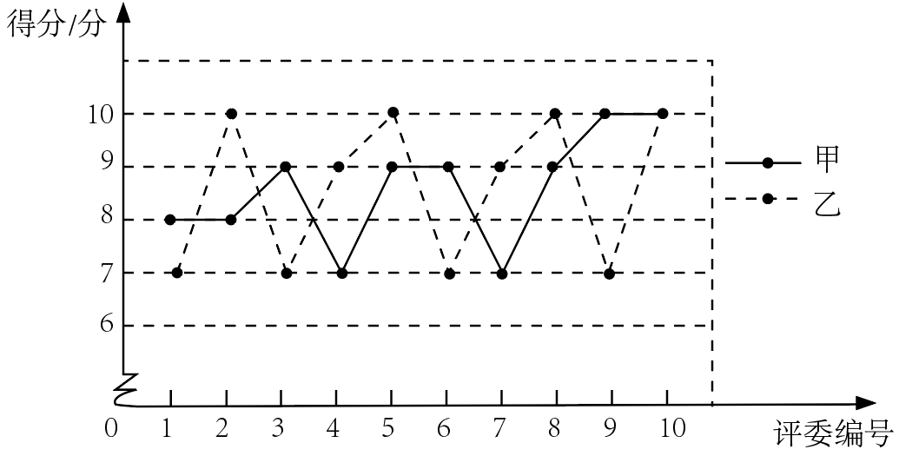

2022年北京市中考数学真题 · 数学解答题 第23题
23. 某校举办“歌唱祖国”演唱比赛，十位评委对每位同学的演唱进行现场打分，对参加比赛的甲、乙、丙三位同学得分的数据进行整理、描述和分析，下面给出了部分信息．
a．甲、乙两位同学得分的折线图：

b．丙同学得分：
10，10，10，9，9，8，3，9，8，10
c．甲、乙、丙三位同学得分的平均数：
根据以上信息，回答下列问题：
（1）求表中m的值；
（2）在参加比赛的同学中，如果某同学得分的10个数据的方差越小，则认为评委对该同学演唱的评价越一致．据此推断：甲、乙两位同学中，评委对_________的评价更一致（填“甲”或“乙”）；
（3）如果每位同学的最后得分为去掉十位评委打分中的一个最高分和一个最低分后的平均分，最后得分越高，则认为该同学表现越优秀．据此推断：在甲、乙、丙三位同学中，表现最优秀的是_________（填“甲”“乙”或“丙”）．